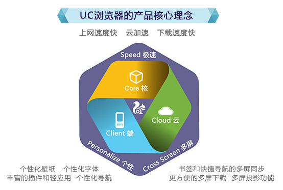
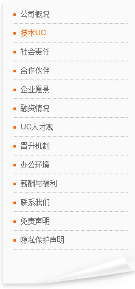

UC优视 2004-2014 © 版权所有 增值电信业务经营许可证: 粤B2-20070379 粤ICP备09210879号
中华人民共和国互联网药品信息服务资格证：（粤）-非经营性-2011-0120
技术UC：
公司核心产品是UC浏览器，它是全球领先的一款智能手机浏览器，能运行在Symbian、Android、ios、Windows Mobile、Win CE、Java、MTK、Brew等主流手机操作系统的200多个著名手机品牌、超过3000款手机终端上。2011年，UC优视推出了新一代UC浏览器UC8系列产品，承载了独创的U3内核和云端技术，完美地支持HTML5应用，具有智能、极速、安全、易扩展等特性，让您在阅资讯、读小说、看视频、上微博、玩游戏、网上购物等功能上都能享受最流畅的移动互联网体验。
从2004年起，UC优视就已经开始用手机终端和网络服务器混合运算(云计算架构)的方式来做手机浏览器 ，这在全球的移动互联网领域都处于领先位置。2011年6月，经过三年的研发和多年的技术积累，UC优视发布了自主研发的全新手机浏览器内核——U3。U3内核是首个中国创造的浏览器内核，其定位于3G无线互联网时代的极速手机浏览体验，不仅能完美呈现桌面全页面浏览效果，同时兼顾高速、安全、智能及更强扩展性能，在完美还原桌面全页面浏览效果的情况下，能将页面流量压缩超过60%，将引领新一代手机浏览革命。

UC优视长期专注于手机浏览器领域，对用户需求的技术实现以及影响到用户体验的各类技术细节上，都有了非常丰富的技术积累。在浏览器产品的网址输入、页面处理、上传下载、数据处理、辅助功能等诸多方面，UC浏览器都明显领先于国内外的同类产品。
